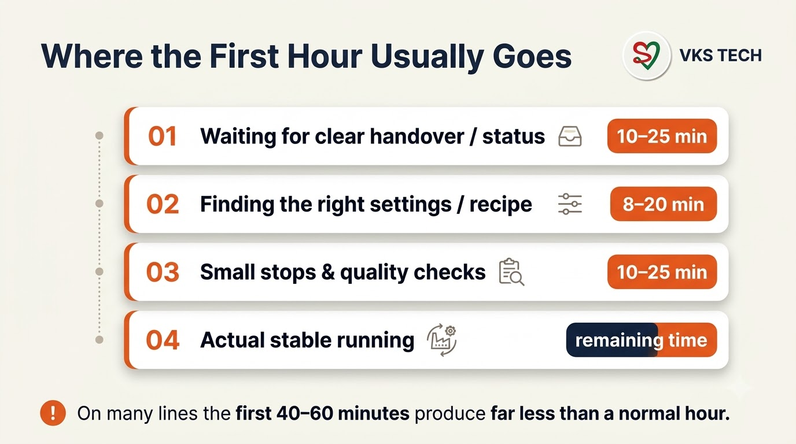
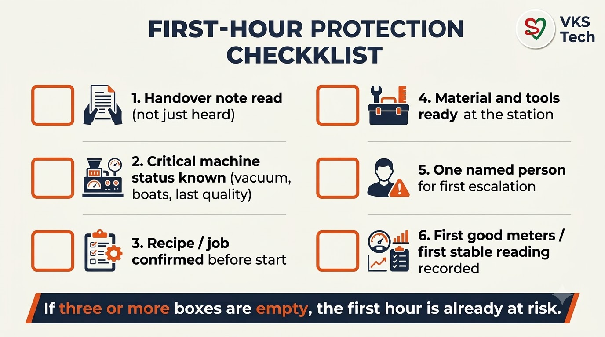
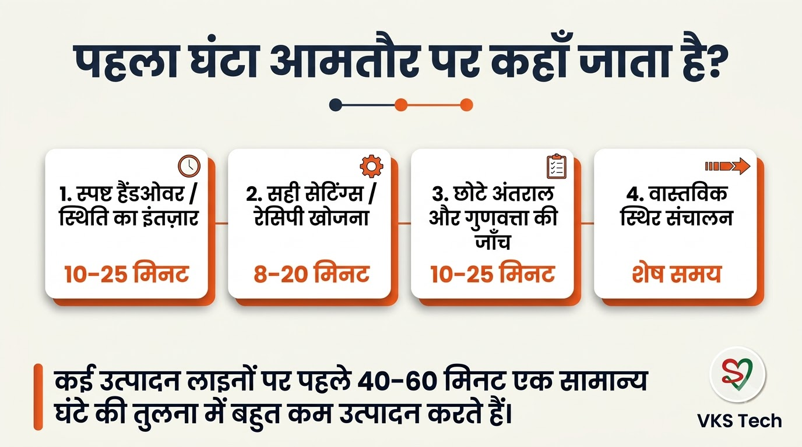
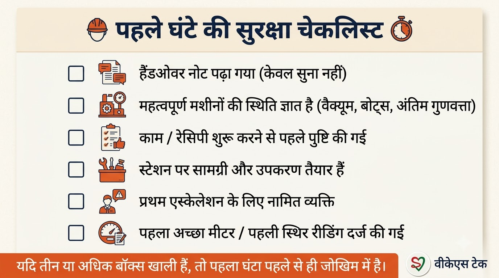

⏱️ The First Hour of the Shift — Where Most Output Is Quietly Lost
📖 9-min read | Plant Operations | Practical, numbers-first
In many metalliser and converting plants the biggest quiet loss of the day is not a major breakdown. It is the first hour of the shift.
The machine is “running”, people are present, yet stable, good output starts much later than the shift clock. By the time the line settles, 40–60 minutes of potential production have already been diluted by waiting, searching, small stops and re-checks.
Where the First Hour Usually Goes

Typical pattern (not every plant, but common enough):
- 10–25 minutes — Waiting for clear status from the previous shift or hunting for the last known good settings
- 8–20 minutes — Settling recipe, tension, vacuum or coating parameters that should have been ready
- 10–25 minutes — Small stops, quality re-checks, and “let’s just watch it once more”
- Remaining time — Actual stable running
None of these look dramatic on a single day. Together they quietly move the monthly average.
Why It Keeps Happening
- Handover is verbal or incomplete — the incoming team starts with partial information
- Critical settings and last quality status are not written in one place
- Material, tools or the next job are not staged before the shift starts
- No one is clearly responsible for the first stable reading
- The daily meeting discusses yesterday’s total, not the first-hour pattern
The root is rarely motivation. It is missing structure in the 15–20 minutes before and after the shift change.
A Practical First-Hour Protection Checklist

Use this as a short, visible list at the machine or in the shift book:
- Handover note read — not just heard. Last two hours’ performance, open issues, boat/vacuum/quality status.
- Critical machine status known — what was left running, what was abnormal, what was already tried.
- Recipe / job confirmed before the line is expected to produce good material.
- Material and tools at the station — no walking for the first reel, knife, or sample kit.
- One named person for first escalation — so the team does not wait and discuss.
- First good meters / first stable reading recorded — creates a simple habit of measuring the first hour.
If three or more boxes are empty when the shift starts, the first hour is already at risk.
How to Make It Stick in 30 Days
Week 1 — Pick one line. Write the six-point checklist on a single page. Run it for every shift change. Do not change anything else.
Week 2 — Measure only one number: time from shift start to first stable good output (or first accepted meters). Compare with the previous week.
Week 3 — Add the first-hour time to the daily production meeting. Keep it to one line on the board. No long discussion.
Week 4 — Review what still causes delay. Fix the top one or two causes (usually information or staging). Expand to the next line only after the first line is stable.
Where Tools Help (Lightly)
Most of the gain comes from discipline, not software. A simple written handover and a visible checklist already move the number.
Where a tool becomes useful is when the plant wants the handover note and the skill/coverage view to be available on a phone at shift change, or when the same first-hour delays keep appearing because the right person is not rostered. In those cases a live roster-plus-skill view (the kind of thing Man Power is designed for) removes the guessing. It is optional; the checklist works without it.
Key Takeaway
⏱️ शिफ्ट का पहला घंटा — जहाँ सबसे ज्यादा आउटपुट चुपचाप जाता है
📖 10-min read | प्लांट ऑपरेशन्स | व्यावहारिक, नंबर-फर्स्ट
बहुत से मेटलाइज़र और कन्वर्टिंग प्लांट्स में दिन का सबसे बड़ा चुपचाप नुकसान कोई बड़ी ब्रेकडाउन नहीं होता। वह शिफ्ट का पहला घंटा होता है।
मशीन “चल रही” होती है, लोग मौजूद होते हैं, फिर भी स्थिर और अच्छा आउटपुट शिफ्ट की घड़ी से काफी बाद शुरू होता है। जब लाइन सेटल होती है, तब तक 40–60 मिनट की संभावित प्रोडक्शन इंतजार, खोज, छोटे स्टॉप्स और दोबारा जाँच में पतली पड़ चुकी होती है।
पहला घंटा आमतौर पर कहाँ जाता है

- 10–25 मिनट — पिछली शिफ्ट से साफ स्टेटस का इंतजार या आखिरी अच्छी सेटिंग्स की खोज
- 8–20 मिनट — रेसिपी, टेंशन, वैक्यूम या कोटिंग पैरामीटर सेटल करना
- 10–25 मिनट — छोटे स्टॉप्स, क्वालिटी री-चेक, और “एक बार और देख लेते हैं”
- बाकी समय — असली स्थिर रनिंग
यह बार-बार क्यों होता है
- हैंडओवर मौखिक या अधूरा रहता है
- क्रिटिकल सेटिंग्स और आखिरी क्वालिटी स्टेटस एक जगह नहीं लिखा होता
- मटेरियल, टूल्स या अगला जॉब शिफ्ट शुरू होने से पहले स्टेज नहीं होता
- पहले स्थिर रीडिंग के लिए कोई साफ जिम्मेदार नहीं होता
- डेली मीटिंग कुल नंबर की बात करती है, पहले घंटे के पैटर्न की नहीं
व्यावहारिक पहले-घंटे की सुरक्षा चेकलिस्ट

- हैंडओवर नोट पढ़ा गया — सिर्फ सुना नहीं। पिछले दो घंटे का परफॉर्मेंस, खुली समस्याएँ, बोट/वैक्यूम/क्वालिटी स्टेटस।
- क्रिटिकल मशीन स्टेटस पता है — क्या चल रहा छोड़ा गया, क्या असामान्य था, क्या पहले ही कोशिश की जा चुकी।
- रेसिपी / जॉब कन्फर्म — इससे पहले कि लाइन से अच्छा माल अपेक्षित हो।
- मटेरियल और टूल्स स्टेशन पर — पहली रील, नाइफ या सैंपल किट के लिए घूमना नहीं।
- पहले एस्केलेशन के लिए एक नामित व्यक्ति — ताकि टीम इंतजार और चर्चा में समय न गवाए।
- पहले अच्छे मीटर / पहली स्थिर रीडिंग रिकॉर्ड — पहले घंटे को मापने की आदत बनती है।
अगर शिफ्ट शुरू होते समय तीन या ज्यादा बॉक्स खाली हैं, तो पहला घंटा पहले से जोखिम में है।
30 दिनों में कैसे टिकाएँ
सप्ताह 1 — एक लाइन चुनें। छह-पॉइंट चेकलिस्ट एक पेज पर लिखें। हर शिफ्ट चेंज पर चलाएँ।
सप्ताह 2 — सिर्फ एक नंबर मापें: शिफ्ट शुरू से पहली स्थिर अच्छी आउटपुट तक का समय। पिछले सप्ताह से तुलना करें।
सप्ताह 3 — डेली प्रोडक्शन मीटिंग में पहले घंटे का समय एक लाइन के रूप में जोड़ें। लंबी चर्चा नहीं।
सप्ताह 4 — अभी भी कौनसी देरी बचती है, उसकी समीक्षा करें। ऊपर की एक-दो वजहें ठीक करें। पहली लाइन स्थिर होने के बाद ही अगली लाइन पर बढ़ाएँ।